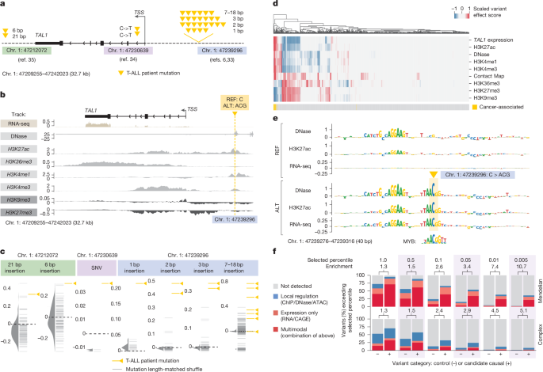
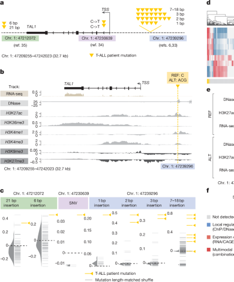
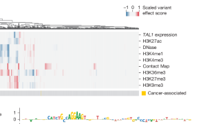
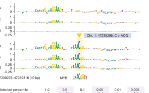
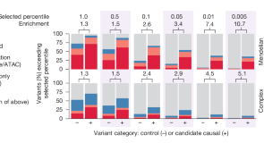

Figure 6. Interpreting variant effects across modalities with AlphaGenome¶
Figure 6는 AlphaGenome의 가장 흥미로운 활용 예시 중 하나입니다.
앞의 Figure 3–5가 각 modality별 benchmark를 보여줬다면, Figure 6는 하나의 실제 disease locus에서 RNA-seq, accessibility, histone mark, motif logic, trait-variant enrichment를 한 번에 엮어 해석할 수 있음을 보여줍니다.
즉, 이 figure의 질문은 “성능이 좋은가?”보다는 “이 모델이 실제 non-coding disease variant를 어떻게 설명해 주는가?”에 더 가깝습니다.
Figure 6 전체 보기¶

논문은 T cell acute lymphoblastic leukaemia (T-ALL)에서 잘 알려진 TAL1 oncogene 주변 non-coding mutation들을 예시로 듭니다.
핵심은 서로 다른 위치와 길이의 돌연변이들이 결국 TAL1 upregulation이라는 공통 결과로 수렴한다는 점이고,
AlphaGenome이 그 공통 메커니즘을 여러 modality에서 동시에 재현해 준다는 데 있습니다.
왜 CD34+ CMP track을 보나?
논문은 T-ALL 세포 자체의 정확한 training track을 쓰는 대신,
사용 가능한 데이터 중에서 CD34+ common myeloid progenitor (CMP)를
T-ALL cell of origin에 가장 가까운 맥락으로 사용했습니다.
즉, Figure 6은 “환자 세포를 완벽히 재현했다”기보다,
T-ALL과 가장 가까운 이용 가능한 전구세포 맥락에서 variant effect를 virtual screening한 예시라고 이해하는 것이 맞습니다.
패널 A–C — TAL1 locus의 oncogenic mutation을 한 자리에서 바라보기¶

패널 A — TAL1를 활성화하는 세 종류의 non-coding mutation 그룹¶
패널 A는 TAL1 locus 주변의 세 종류의 gain-of-function mutation group을 먼저 정리합니다.
5′ neo-enhancer cluster, intronic SNV, 3′ neo-enhancer가 모두 표시되어 있고,
노란 삼각형은 실제 T-ALL 환자에서 보고된 mutation을 뜻합니다.
이 패널이 먼저 하고 싶은 말은 단순합니다.
돌연변이의 정확한 위치와 형태는 서로 다르지만,
이들은 모두 TAL1을 비정상적으로 켜는 방향으로 작동하는 것으로 알려져 있습니다.
즉, AlphaGenome이 풀어야 하는 질문은 “이 mutation이 deleterious인가?”가 아니라,
“이 mutation이 어떤 regulatory mechanism을 통해 TAL1 activation으로 이어지는가?”입니다.
패널 B — oncogenic insertion의 ALT−REF multimodal track difference¶
패널 B는 그중에서도 대표적인 oncogenic insertion
chr. 1: 47239296 C>ACG에 대해,
CD34+ CMP track에서 ALT − REF 차이를 보여줍니다.
여기서는 observed와 predicted를 나란히 두는 Figure 2류의 그림이 아니라,
변이 전후 차이 자체를 바로 그려 놓았다는 점이 다릅니다.
이 패널에서 가장 먼저 봐야 할 것은 variant 위치 근처의 local activation signal입니다.
ALT sequence는 변이 주변에서 DNase, H3K27ac, H3K4me1 같은 활성 enhancer와 관련된 신호를 증가시키고,
이는 그 자리에 neo-enhancer가 생겼다는 기존 실험적 해석과 잘 맞습니다.
동시에 TAL1 TSS와 gene body를 보면 더 넓은 맥락도 보입니다.
논문이 설명하듯, ALT는 TAL1 근처에서 repressive mark인 H3K9me3/H3K27me3를 낮추고,
gene body에서 active transcription-related mark인 H3K36me3를 높이며,
결국 RNA-seq signal 증가와도 연결됩니다.
즉, 하나의 짧은 insertion이 단순 local motif change에 그치지 않고,
chromatin state → transcriptional output로 이어지는 연쇄 변화를 유도하는 양상이 나타납니다.
패널 C — 환자 mutation과 matched shuffle controls의 TAL1 expression score 비교¶
패널 C는 TAL1 expression score를 mutation group별로 요약한 그림입니다.
여기서 중요한 비교는 실제 patient mutation과 길이 및 sequence 구성을 맞춘 matched shuffle control 사이의 차이입니다.
즉, 같은 길이의 indel이면 다 비슷한 effect가 나는 것이 아니라,
실제 oncogenic mutation이 유난히 TAL1 expression을 높이는 sequence라는 점을 보려는 것입니다.
이 결과는 Figure 6 전체에서 매우 중요한 bridge 역할을 합니다.
패널 B가 한 mutation의 mechanistic deep dive였다면,
패널 C는 그 논리를 여러 mutation group으로 확장했을 때도
실제 oncogenic mutation이 control보다 더 큰 TAL1 upregulation score를 보인다는 사실을 보여줍니다.
즉, AlphaGenome의 해석이 우연한 single example에 머물지 않는다는 뜻입니다.
패널 D — multimodal heat map은 mutation마다 서로 다른 경로가 있지만 공통 방향은 TAL1 activation임을 보여준다¶

패널 D는 Figure 6에서 가장 정보량이 많은 부분입니다.
각 열은 패널 C의 개별 variant 하나를 뜻하고,
각 행은 하나의 genome track 또는 variant effect score를 뜻합니다.
즉, 이 그림은 각 mutation이 RNA-seq, DNase, histone mark, contact map 등 여러 readout에 어떤 영향을 줄지 동시에 요약한 multimodal heat map입니다.
이 그림은 두 가지를 말해 줍니다.
첫째, 모든 mutation이 같은 방식으로 작동하지는 않습니다.
어떤 mutation은 accessibility와 active histone mark를 강하게 올리고,
어떤 mutation은 RNA-level score가 더 두드러지며,
어떤 mutation은 보다 제한적인 local effect만 보입니다.
즉, 메커니즘의 세부 경로는 mutation마다 다를 수 있습니다.
둘째, 그럼에도 불구하고 clustering을 해 보면 oncogenic mutation들은
대체로 TAL1 activation과 양립 가능한 multimodal signature를 공유합니다.
즉, AlphaGenome은 이 locus에서 하나의 정답 readout만 보는 것이 아니라,
여러 modality를 통해 같은 생물학적 결론을 서로 다른 증거선으로 뒷받침하고 있습니다.
이 패널이 Figure 6의 제목과 가장 잘 맞는 부분입니다.
논문이 말하는 multimodal interpretation은 단순히 “출력이 여러 개 있다”는 뜻이 아니라,
하나의 variant를 여러 분자적 readout에서 동시에 해석할 수 있다는 뜻입니다.
패널 E — REF sequence에는 없던 MYB motif가 ALT sequence에서 새로 생긴다¶

패널 E는 대표 oncogenic insertion에 대한 ISM 결과입니다.
위쪽은 reference sequence, 아래쪽은 alternative sequence에서의 ISM이고,
DNase, H3K27ac, TAL1 RNA-seq 세 readout을 함께 보여줍니다.
이 그림의 핵심은 논문이 직접 강조하듯 아주 선명합니다.
REF background에서는 variant 주변 40 bp 안에 TAL1 expression을 크게 바꿀 만한 motif sensitivity가 거의 없는데,
ALT background에서는 variant 위치에 MYB motif가 새로 등장하면서 DNase, H3K27ac, RNA-seq이 함께 증가하는 방향의 sensitivity가 생깁니다.
즉, AlphaGenome은 단순히 “이 indel은 큰 effect가 있다”에서 멈추지 않고,
그 효과가 새로운 MYB binding opportunity의 생성 때문일 수 있음을 sequence 수준에서 제시합니다.
논문은 이것이 기존 연구에서 제안된 mechanism과도 일치한다고 설명합니다.
또 하나 흥미로운 점은, 모델이 MYB motif 외에도 근처의 ETS-like motif에 민감한 신호를 포착한다는 것입니다.
논문은 이 motif의 기능은 아직 불확실하다고 말하지만,
바로 이런 부분이 AlphaGenome 같은 모델의 장점입니다.
즉, 기존에 알려진 mechanism을 재현할 뿐 아니라,
추가적인 candidate mechanism까지 hypothesis 수준으로 제시할 수 있다는 뜻입니다.
패널 B와 패널 E는 어떻게 연결되나?
패널 B는 ALT sequence가 실제로 DNase, histone mark, RNA-seq을 어떻게 바꾸는지를 보여줍니다.
패널 E는 그 변화가 왜 생겼는지를 sequence motif 수준에서 설명합니다.
즉, ALT−REF multimodal output과 ISM motif logic가 서로 이어질 때,
모델의 variant interpretation이 훨씬 설득력을 얻습니다.
패널 F — 높은 quantile-score threshold는 trait-altering variant를 enrichment한다¶

패널 F는 TAL1 단일 locus를 넘어,
AlphaGenome score가 좀 더 일반적인 trait-altering non-coding variant 해석에도 도움이 되는지를 평가합니다.
여기서 막대는 candidate causal variant와 matched control variant를 비교하고,
variant가 일정 quantile-score threshold를 넘는지 여부를 기준으로 enrichment를 계산합니다.
이 패널은 두 축으로 읽어야 합니다.
첫째, threshold가 올라갈수록 enrichment는 커집니다.
즉, 매우 높은 AlphaGenome score를 보이는 variant는 실제 candidate causal variant일 가능성이 더 높아집니다.
하지만 동시에 recall은 떨어집니다.
즉, 이런 thresholding은 “많이 잡는 전략”이 아니라 정말 강한 candidate를 우선순위화하는 전략입니다.
둘째, variant를 local regulation, expression only, multimodal 카테고리로 나눴다는 점이 중요합니다.
즉, 어떤 variant는 DNase/ATAC/ChIP 같은 local regulatory track에서만 강하고,
어떤 variant는 RNA/CAGE만 강하며,
어떤 variant는 두 축 모두에서 strong score를 냅니다.
Figure 6는 바로 이런 식으로 변이의 가능한 작동 메커니즘을 modality 조합으로 분류할 수 있음을 보여줍니다.
논문이 강조하듯, AlphaGenome은 phenotype 자체를 직접 예측하는 모델은 아닙니다.
하지만 패널 F는 높은 multimodal score가
candidate causal non-coding variant를 추리는 데 유용한 기능적 힌트가 될 수 있음을 보여줍니다.